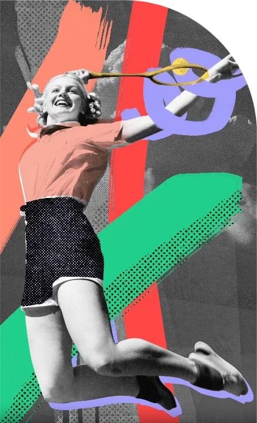

01
Conhecer sua identidade
“Antes de influenciar o mundo, você precisa saber quem é.”
Teologia Livre (Fatemi)
Conhecer a Deus e a Bíblia de forma profunda, o fundamento de tudo.
Grupos de alinhamento
Debates sobre os temas das aulas, conduzidos por um mentor.
Grupos de acompanhamento
Encontros semanais em pequenos grupos, liderados por um casal, para suporte emocional e espiritual.
